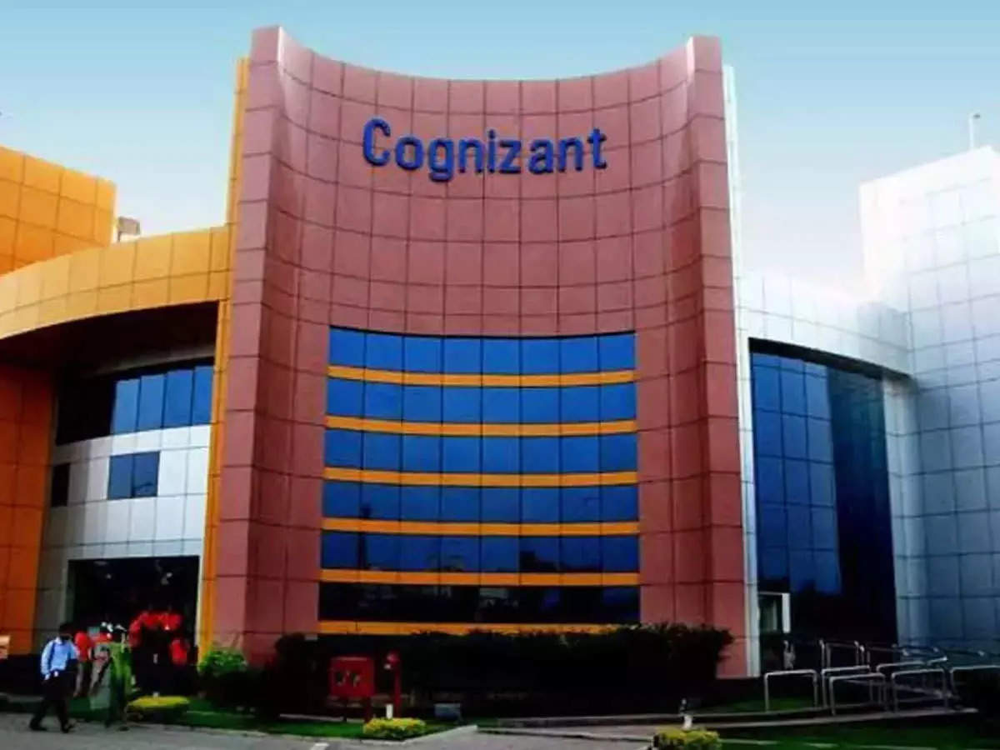
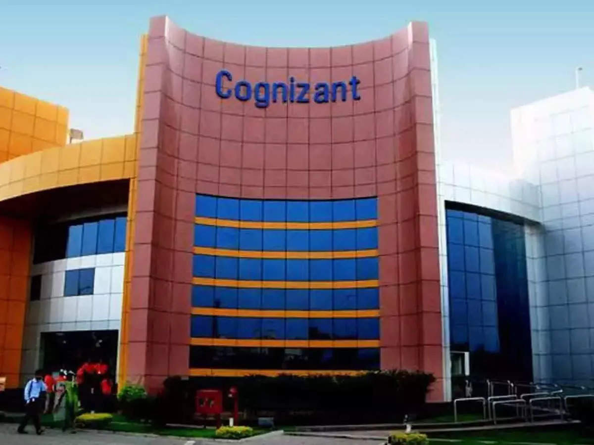

Work Experience
As a part of the engineering academy, I’ve had many opportunities to learn about practical engineering in the industry by attending field trips and meeting guest speakers. On my first field trip, we visited the Patriots Jet Team base. The Patriots Jet Team are a team of people that fly jets in air shows around the U.S. It was very interesting to be able to see the hangar and the jets inside of it. A few members of the team who had flown the jets before and worked there guided us throughout the hangar, describing specific parts of each plane. Every plane was unique and had features specific to it to make it as aerodynamic and efficient as possible. We also learned about satellites and how they orbit in various conic shapes. The whole experience was captivating, and it sparked my interest in aerospace engineering. The stories from the professionals onsite were incredible — each one was unique and filled with action. They were constantly improving designs and flying jets, showing how the field was rich with variety. It was useful to learn about how engineers design redundant systems for safety and incorporate unique takes on traditional aeroplane designs to optimize for aerodynamics, and I would love to explore the field of aerospace engineering further.
Another field trip I was able to attend was the Livermore Aviation virtual tour with Robot Garden, New Frontier Aerospace, and Five Rivers Aviation. This was an interesting experience where I was able to learn about the daily operations of an airport. I learned about how engineers operate airplanes and ensure that they have a safe flight. It was especially interesting to see a video of them flying a plane and pointing out the different tools and gauges on the plane.
In addition, I attended Berkeley EECS day to learn about UC Berkeley’s Electrical Engineering and Computer Science program. It was an insightful experience where I was able to gain hands-on experience with two different fields of engineering and learn how they interact with each other. We were able to work through data science labs and experiment with basic circuits, and it was a great glimpse into the way that research is conducted in universities.
Lastly, I attended the virtual JA Entrepreneurship Summit. Here, I was able to see different guest speakers talk about aspects of Amazon Web Services and how it is used to power key parts of the internet. They covered information about the infrastructure and planning that goes into making large, scalable services. Many of these problems are often solved through distributed systems that people can easily overlook until they fail, so it was very insightful to see this part of software engineering deconstructed.
Throughout the year, we’ve listened to many guest speakers, each one bringing their experience and stories to give us an idea of their respective industry and career. I found one speaker particularly interesting: Maynard Holliday. He is a renowned engineer known for helping to build a robot to investigate the nuclear meltdown at Chernobyl. Even though we were all engineering students and had been exposed to the engineering design process in our projects, we had never really seen how this process is applied outside of the classroom on a more practical level. Maynard Holliday brought us all to his world and told us his stories, and surprisingly, we could identify many of the same processes that we learned in the classroom, albeit at higher scales and complexities. It was mesmerizing to hear about how cooling water stopped flowing, causing overheating and an explosion to blow off the top of the reactor. This was entirely unexplored territory, and something new would have to be designed to explore the space. We learned about the design process that went into the robot and the variables it had to account for. Specifically, they were constrained to an environment with high levels of radiation which could harm the hardware and software, and they needed to use various sensors to maneuver the robot because of low visibility and the high amount of unknowns in the Chernobyl plant. I was already interested in robots before, but this only solidified that interest. He showed us how every robot he designed was unique and optimized for specific purposes, but usually inspired by biology for movement. This sort of natural movement was very hard to design manually, and it was interesting to learn about the process behind it. All in all, I learned a lot about robotics and engineering, and I loved how every project was unique and required novel designs to tackle problems that had never been seen before.
Another guest speaker I found interesting was Jason Yosinski, an AI engineer at Uber. He introduced us to AI being used at scale for self-driving cars. He talked about convolutional neural networks and how they are used in computer vision. He dove into the layers of the neural network and how each of them were able to identify different features. As they combined and formed a “deep” neural network, they were able to identify increasingly complex features and be used in more complex applications such as self-driving cars.
Ganesh Datta was another guest speaker I had the pleasure of listening to. He spoke about the intersection between engineering and entrepreneurship. Specifically, he talked about important and practical questions to consider when bringing a product to the market. I learned about product-market fit, finding investors, and the overall engineering design process.
In addition, I attended the guest talk by Donald James, administrator at NASA and author of “Manners Will Take You Where Brains and Money Won't”. He talked about his experience in finding a successful career in NASA and gave extremely valuable advice on what helped him the most. In brief, the importance of good manners and people skills is highly overlooked, and I learned that it is crucial to have them in order to succeed.
During my junior year, I was given the opportunity to be a part of the mentorship program. My mentor was Girish Krishna, senior director at Cognizant. He guided me throughout the year and gave many pieces of valuable advice in the process. I learned about tackling behavioral interviews by not being afraid to ask questions, crafting the perfect resume for different positions, and creating SMART goals.
 
